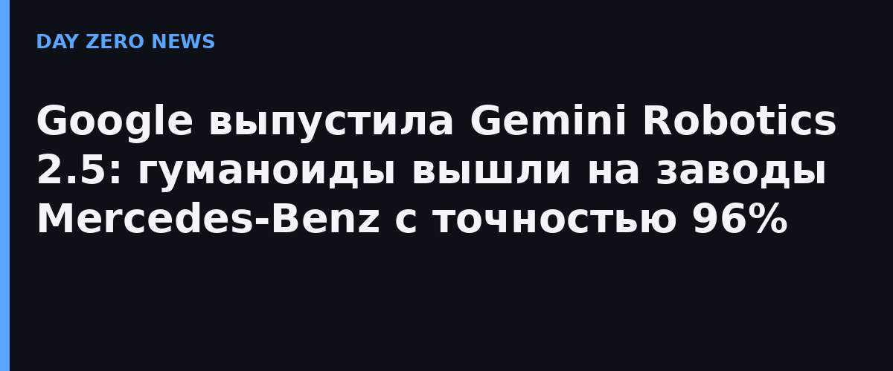

Google DeepMind анонсировала Gemini Robotics 2.5 — самое мощное поколение моделей VLA (vision-language-action), которые управляют роботами напрямую из картинки и текстовой инструкции. Модель заметно расширяет набор навыков, которые робот способен освоить, и скорость их изучения: по заверению Google, роботы сделали шаг к «человеческой» ловкости.
Модель проверили более чем на 200 задачах разной сложности — от раскладки еды щипцами до завязывания бантика на подарочной коробке и переливания жидкостей пипеткой. Это комбинация продвинутого использования инструментов, работы с мягкими и деформируемыми предметами и бережного обращения с хрупким. По сравнению с предыдущей базовой линией успешность задач выросла на 30–100% в зависимости от типа, а время выполнения сократилось на 20–30%.
Главный экзамен — производство. Вместе с Apptronik и Mercedes-Benz модель обкатали на действующих линиях заводов в Кечкемете (Венгрия) и Зиндельфингене (Германия): гуманоид Apollo 2 с пятипалыми кистями SharpaWave (22 степени свободы) доставал из загрузочных коробов металлические автомобильные кронштейны и укладывал их в сортировочные лотки в нужном порядке, по ходу поправляя зазоры. Успешность пилота — 96%. Работу координировала модель рассуждения Gemini Robotics ER, а руки управлялись непосредственно VLA-моделью; в обучении и симуляции помог Gemini 4 Argon. Рутинную сортировку отдают роботам, чтобы техники занимались сложной сборкой.
Gemini Robotics 2.5, как и предшественники, изначально рассчитана на разные платформы — от людей Apollo 2 с 22-степенными кистями до Franka Duo с параллельными двухпалыми захватами. Вместе с релизом Google усилила физическую безопасность и управляемость робота и представила новый бенчмарк на состязательные атаки (джейлбрейк-атаки на промпты) против роботов — для отрасли тема новая. Пока доступ открыт только партнёрам Google в робототехнике: публичного API или загрузки модели не обещали.